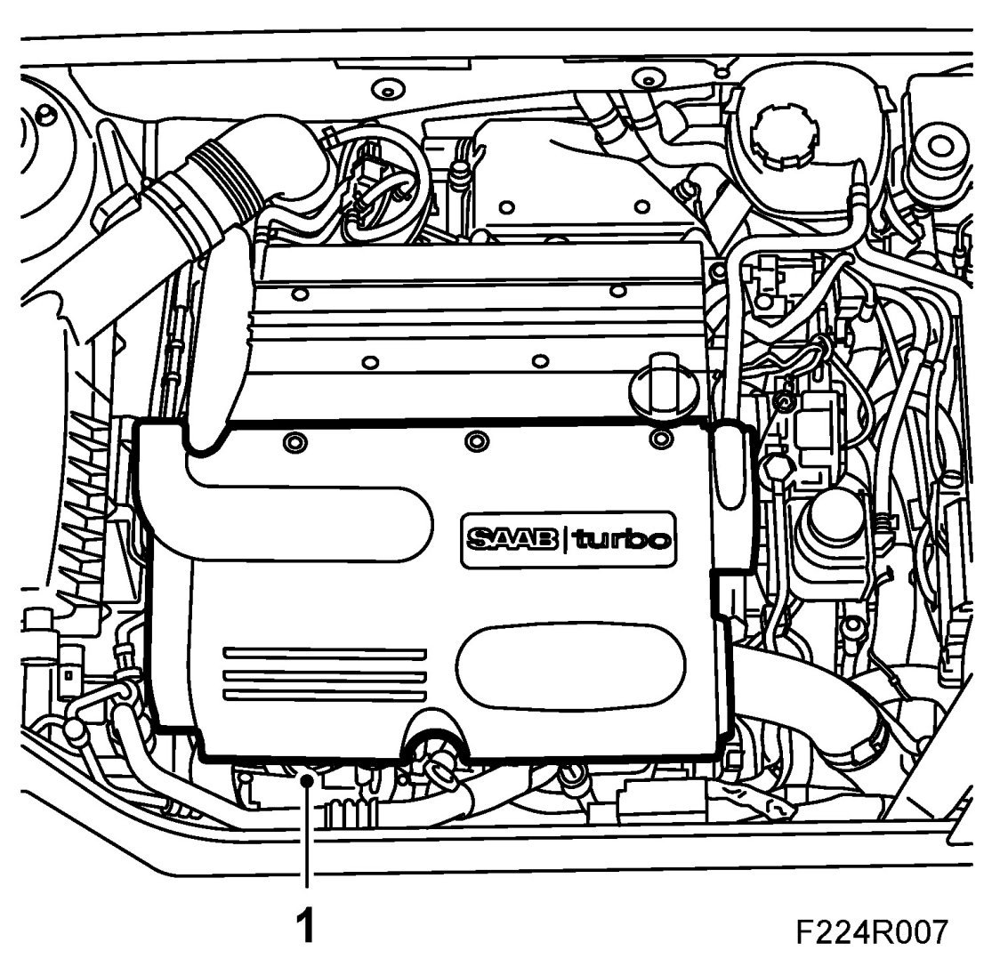
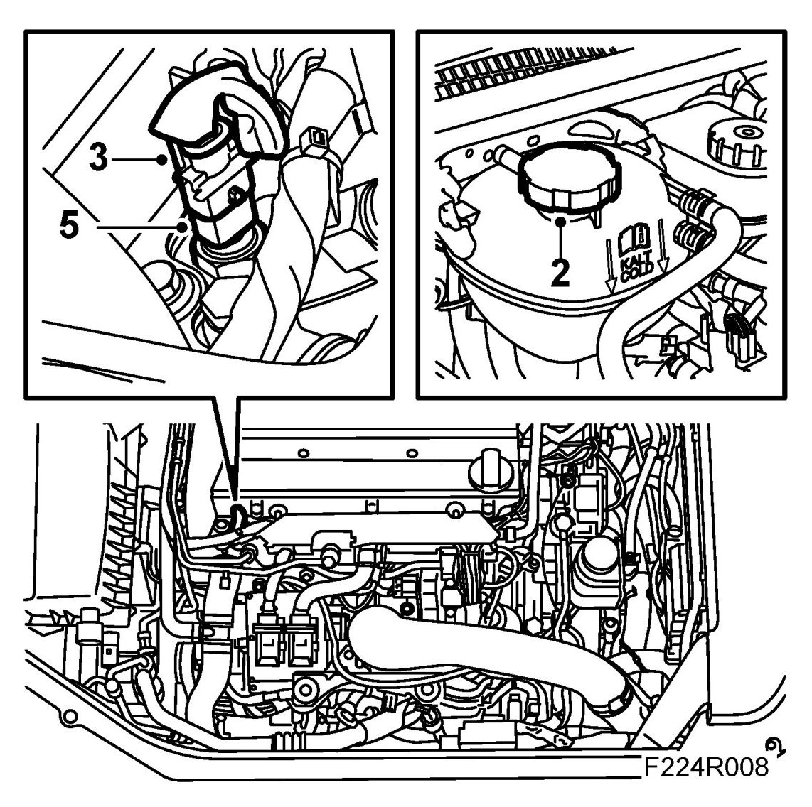
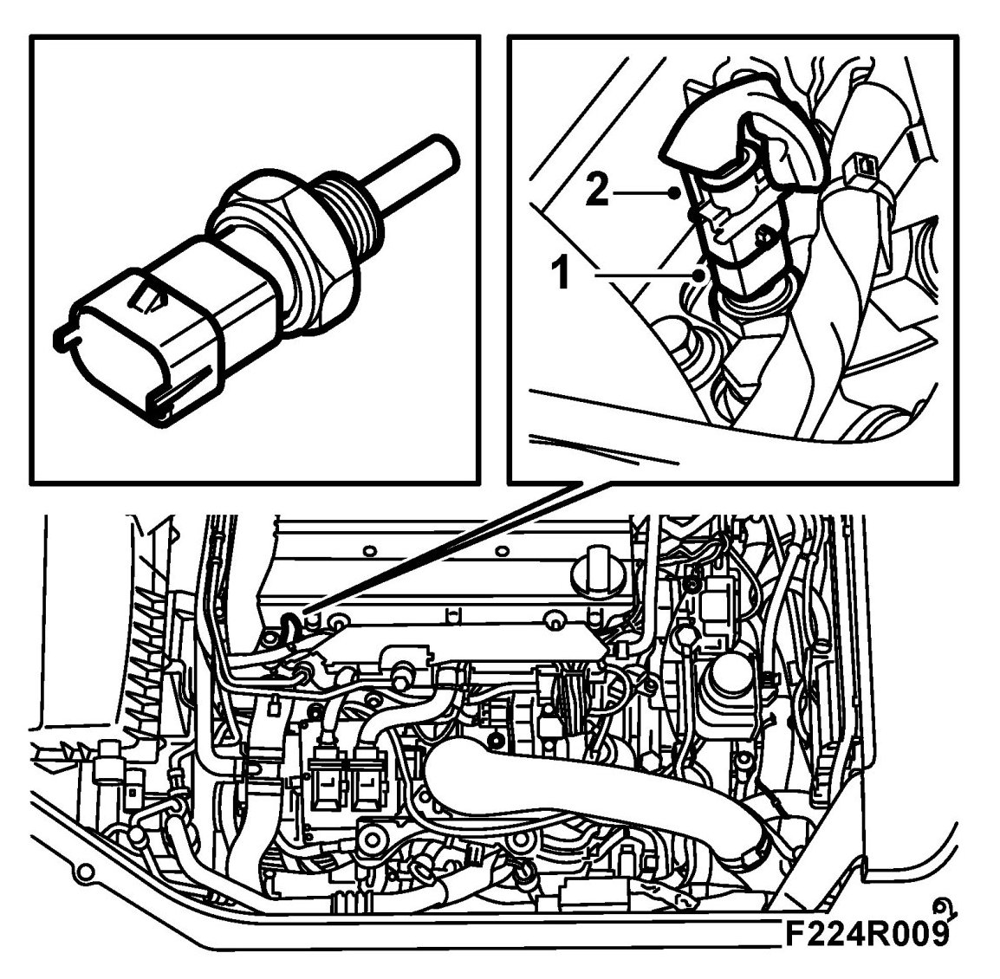
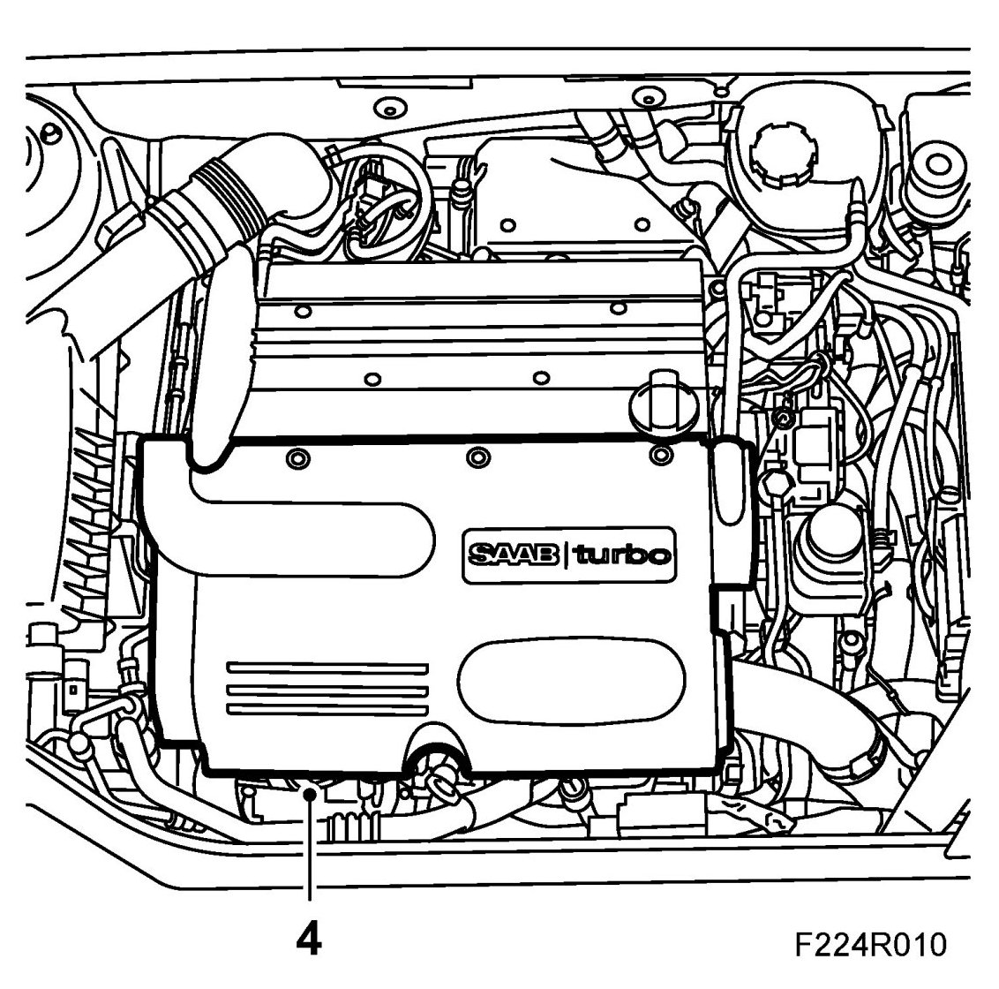

Coolant Temperature Sensor/Switch (For Computer): Service and Repair
Temperature Sensor, Coolant (202) B207
To remove
1. Remove the upper engine cover.

2. Undo the cap on the expansion tank to release pressure, retighten the cap.

3. Unplug the connector to the coolant temperature sensor.
4. Have some paper ready to collect any spilled coolant.
5. Remove the coolant temperature sensor. Use 83 96 087 Socket, coolant temperature sensor B207.
To fit
1. Quickly fit the coolant temperature sensor with new seal.

Tightening torque 15 Nm (11 lbf ft)
2. Plug in the coolant temperature sensor connector.
3. Top up with coolant as necessary.
4. Replace the upper engine cover.
